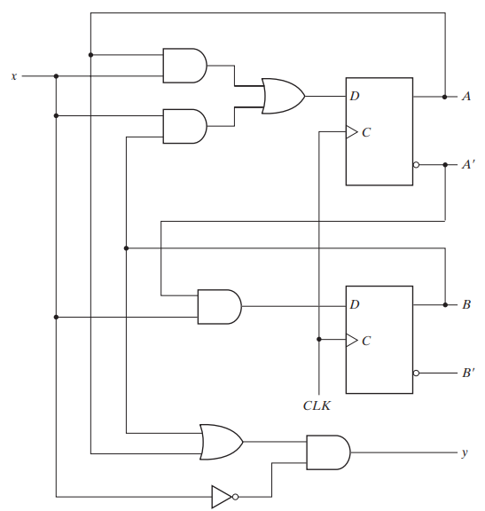
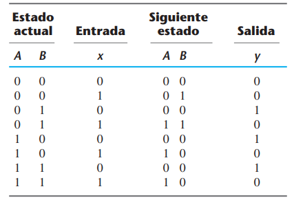
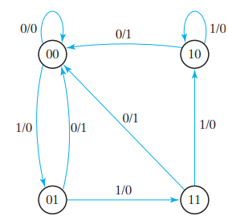
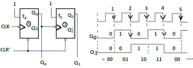
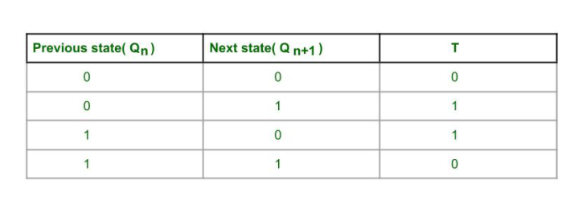
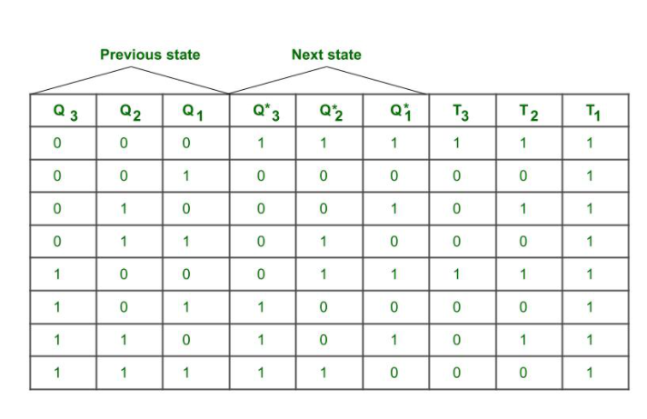
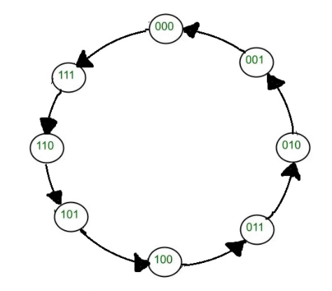

El comportamiento de un circuito secuencial con reloj está determinado por las entradas, las salidas y el estado de sus flip-flops.
Las salidas y el siguiente estado son función de las entradas y del estado actual.
El análisis de un circuito secuencial consiste en obtener una tabla o diagrama para la sucesión temporal de entradas, salidas y estados internos.
Es posible escribir expresiones booleanas que describen el comportamiento del circuito secuencial.
Ecuaciones de estado
El comportamiento de los circuitos secuenciales con reloj se describe algebraicamente con ecuaciones de estado.
Una ecuación de estado (también llamada ecuación de transición) especifica el siguiente estado en función del estado actual y las entradas
En el caso del flip-flop D, tenemos la ecuación característica:
Q(t+1)=D
Ecuación de estado para el flip-flop T ?
Ecuaciones de estado
El comportamiento de los circuitos secuenciales con reloj se describe algebraicamente con ecuaciones de estado.
Una ecuación de estado (también llamada ecuación de transición) especifica el siguiente estado en función del estado actual y las entradas
En el caso del flip-flop D, tenemos la ecuación característica:
Q(t+1)=D
Ecuación de estado para el flip-flop T
Q(t+1)= T⊕Q
Tabla de estados
La sucesión temporal de entradas, salidas y estados de flip-flop se puede presentar de forma compacta en una tabla de estados (también llamada tabla de transición).
La tabla consta de cuatro secciones rotuladas estado actual, entrada, siguiente estado y salida.
La sección de estado actual muestra los estados de los flip-flops en cualquier instante dado t.
La sección de entrada da un valor de x para cada posible estado actual.
La sección de siguiente estado muestra los estados de los flip-flops un ciclo de reloj después, en el tiempo t+1.
La sección de salida da el valor de y en el tiempo t para cada estado actual y condición de entrada.
Tabla de Estados


Diagrama de estados
La información contenida en una tabla de estados se representa gráficamente en forma de diagrama de estados.
En este tipo de diagramas, un estado se representa con un círculo, y las transiciones entre estados se indican con flechas que conectan a los círculos.
El diagrama de estados proporciona la misma información que la tabla de estados.
La tabla de estados se deduce más fácilmente de un diagrama lógico dado y la ecuación de estado.
El diagrama de estados se sigue directamente de la tabla de estados.
El diagrama de estados muestra una perspectiva gráfica de las transiciones de estado y es la forma más apropiada para interpretar el funcionamiento del circuito
Diagrama de estados

Procedimiento de Diseño
El diseño de un circuito secuencial con reloj parte de un conjunto de especificaciones y culmina en un diagrama lógico o una lista de funciones booleanas de la cual puede obtenerse el diagrama lógico.
Un circuito secuencial sincrónico consta de flip-flops y compuertas combinacionales.
El diseño del circuito consiste en escoger los flip-flops y luego encontrar una estructura de compuertas combinacionales que, junto con los flip-flops, produzca un circuito que satisfaga las especificaciones planteadas.
El número de flip-flops se deduce del número de estados que se requieren en el circuito.
Procedimiento de Diseño
Deduzca, de la descripción textual y las especificaciones del funcionamiento deseado, un diagrama de estados para el circuito.
Reduzca el número de estados si es necesario.
Asigne valores binarios a los estados.
Obtenga la tabla de estados codificada en binario.
Escoja el tipo de flip-flops que se usarán.
Deduzca las ecuaciones simplificadas de entrada y de salida de los flip-flops.
Dibuje el diagrama lógico.
Ejemplo 1, Contador sincrónico 2 bits

Ejemplo 1, Contador sincrónico 2 bits
2 Flip-Flop T
Tabla activación Flip Flop

Ejemplo 1, Contador sincrónico 2 bits
Estado actual Q1 Q0
Estado siguiente Q1⁺ Q0⁺
T0
T1
0 0
0 1
1
0
0 1
1 0
1
1
1 0
1 1
1
0
1 1
0 0
1
1
00
01
10
11
Ejemplo 1, Contador sincrónico 2 bits
Q0+ = Q´0
Q1+ = Q0 ⊕Q1
Contador sincrónico 3 bits???
Contador sincrónico 3 bits


Contador sincrónico 3 bits
Ejercicio:
Encontrar Ecuaciones del próximo estado y dibujar el diagrama del circuito